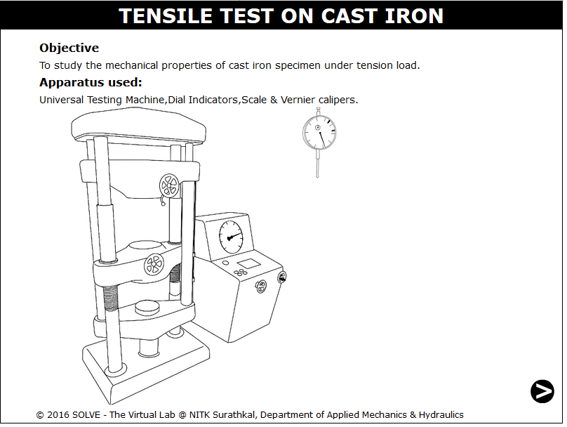
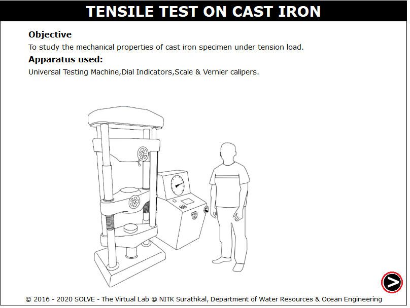
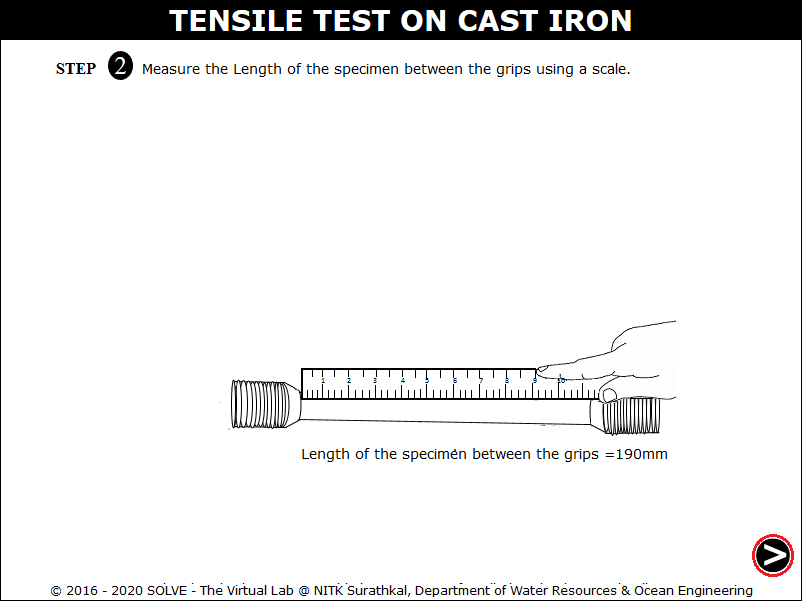
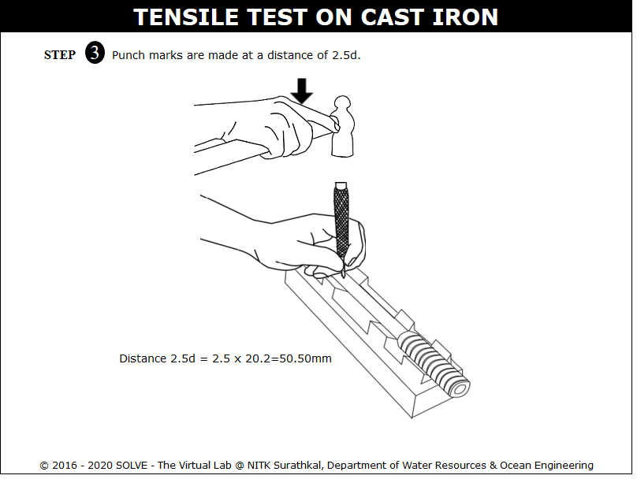
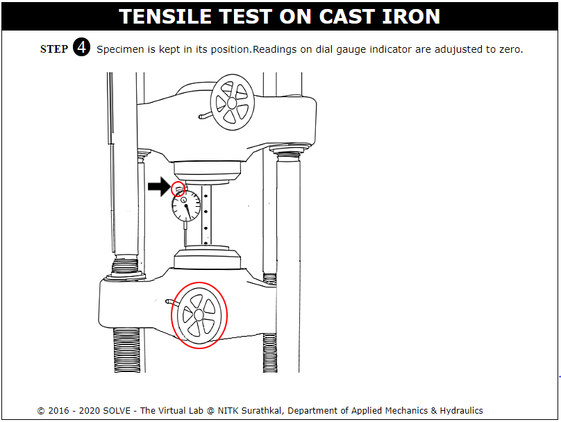
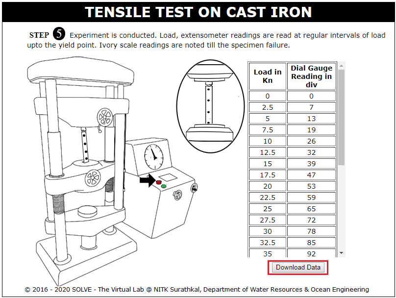
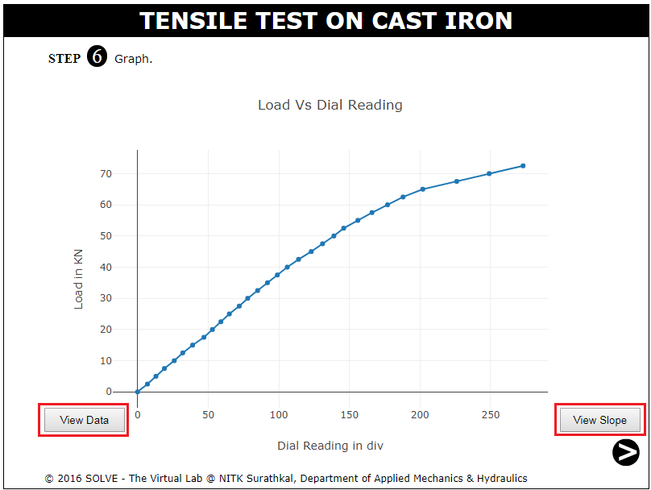
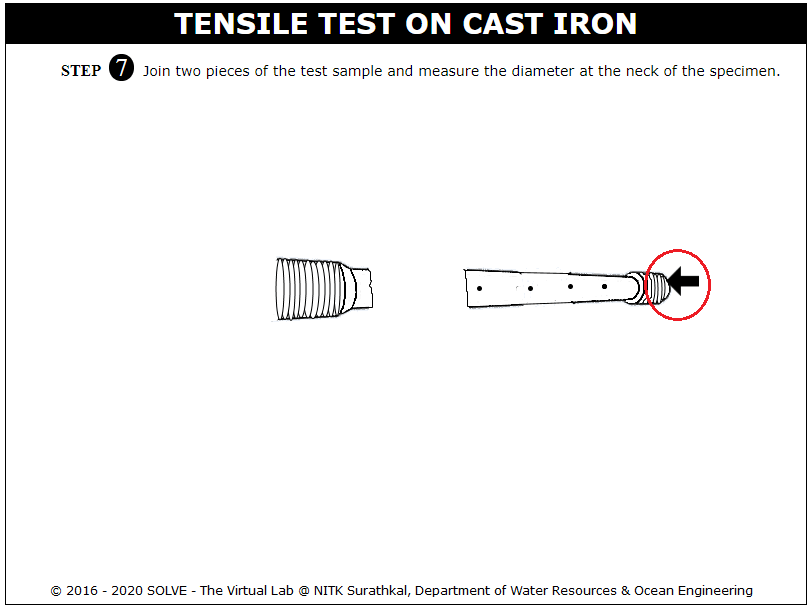
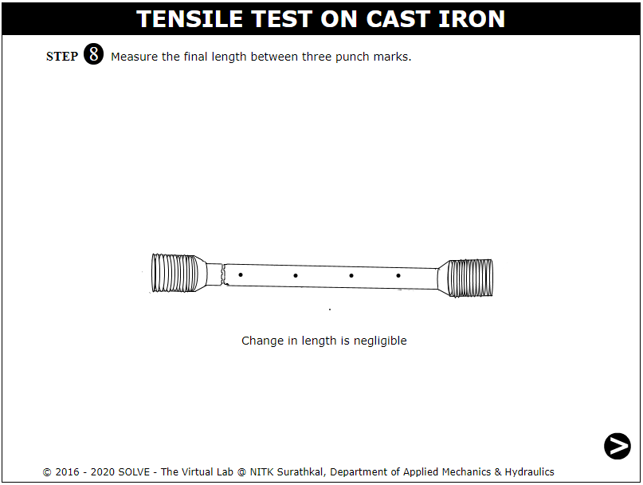
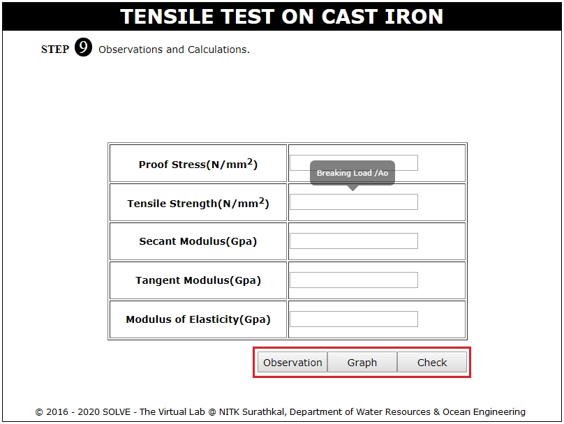

In this test ends of a test piece are fixed into grips connected to a straining device and to a load measuring device. The test involves straining a test piece by tensile force generally to fracture for the purpose of determining one or more of the mechanical properties. Brittle materials such as cast iron do not have a yield point, and do not strain-harden. Therefore, the ultimate strength and breaking strength are the same.
The machine consists essentially of a Straining Unit, Control Panel, and Load Indicator System. Straining unit consists of main hydraulic cylinder with robust base inside and piston which moves up and down. The lower table connected to main piston through a ball & the ball seat is joined to ensure axial loading. There is a connection between lower table and upper head assembly that moves up and down with main piston. The control Panel consists of a power pack complete with drive motor and an oil tank, control valves and an autographic recorder. Load Indicator system consists of a large dial and a pointer. A dummy pointer is provided to register the maximum load reached during the test. Different measuring ranges can be selected by operating the range selection knob.
Load is applied by a hydrostatically lubricated ram. Main cylinder pressure is transmitted to the cylinder of the pendulum dynamometer system housed in the control panel. The cylinder of the dynamometer is also of self-lubricating design. The load transmitted to the cylinder of the dynamometer is transferred through a lever system to a pendulum. Displacement of the pendulum actuates the rack and pinion mechanism which operates the load indicator pointer and the autographic recorder. The deflection of the pendulum represents the absolute load applied on the test specimen. Return movement of the pendulum is effectively damped to absorb energy in the event of sudden breakage of a specimen.
The dial micrometer or dial indicator can be used to measure the extensions. The micrometer is so fixed that its spindle bears against the surface of the lower cross head. Therefore the upward movement of the cross head is transferred to the spindle. The motion of the spindle actuates the lever or a gear train, which in turn operates the pointer on graduated dial. While fixing the dial gauge care should be taken to ensure that the spindle of the dial indicator is vertical and has a point contact with the surface of the cross-head. This can be checked by dropping the spindle through a small height on the surface of contact and observing the reading on the dial. A constant reading indicates the verticality of the spindle.
THEORY:
Brittle fracture is characterized by very low plastic deformation and low energy absorption prior to breaking. A crack, formed as a result of the brittle fracture, propagates fast and without increase of the stress applied to the material. The brittle crack is perpendicular to the stress direction.
There are two possible mechanisms of the brittle fracture:
- Transgranular fracture(A):
In transgranular fracture, the fracture travels through the grain of the material. The fracture changes direction from grain to grain due to the different lattice orientation of atoms in each grain. In other words, when the crack reaches a new grain, it may have to find a new path or plane of atoms to travel on because it is easier to change direction for the crack than it is to rip through. Cracks choose the path of least resistance. You can tell when a crack has changed in direction through the material, because you get a slightly bumpy crack surface.
- Intergranular fracture(B):
The second type of fracture is intergranular fracture. Intergranular fracture is the crack travelling along the grain boundaries, and not through the actual grains. Intergranular fracture usually occurs when the phase in the grain boundary is weak and brittle ( i.e. Cementite in Iron's grain boundaries). Think of a metal as one big 3-D puzzle. Transgranular fracture cuts through the puzzle pieces, and intergranular fracture travels along the puzzle pieces pre-cut edges.
Typical brittle materials like glass do not show any plastic deformation but fail while the deformation is elastic. One of the characteristics of a brittle failure is that the two broken parts can be reassembled to produce the same shape as the original component as there will not be a neck formation like in the case of ductile materials.
Cast Iron do not yield, for such materials which do not have well defined yield point, yield stress is determined by the offset method. This method consist of drawing a line parallel to the initial tangent of a stress strain curve; this line starts at a prescribed offset strain, usually 0.2 %(e=0.002). The intersection of this line with the stress strain curve is called the yield point at 0.2% offset.
FAILURE PATTERN:
RELEVANT INDIAN STANDARD FOR TENSION TEST:
1. IS 1608(2005): Metallic Materials - Tensile Testing At Ambient Temperature, Third Revision, July 2008.

OBJECTIVE: To study the mechanical properties of cast iron specimen under tension load. STEPS:
- Click on the Tensile Test on Cast iron file, a window will open as shown

- Click on the NEXT button to move to the next step.

- To measure the diameter of the specimen click on Vernier Caliper.

- To measure the length of the specimen between the grips click on measuring scale.

- Click on hammer to make punch mark at a distance of 2.5d.

- Click on the roatating lever to lower the machine bottom part, drag the specimen and place it on the position where the arrow is pointing ,then again click on rotating lever to adjust the height and then the dial gauge is mounted.

- Click on the green button to ON the Machine to get the extensometer readings for different load interval there is a option to download the dial gauge reading.

- Graph of Load vs Dial Gauge Reading obtained, click on View Data or View Slope to view the test results.

- Click on Join the pieces of the specimen to join it to measure the change in diameter.

- Join the two specimen to measure the change in specimen length.

- Input the calulated result and then click on Check to view the actual result.



- What type of specimen may be used during the test?
- What is gauge length? explain its importance.
- What is limit of proportionality? Is there any limit of proportionality for Cast Iron? Explain.
- Explain how the ductile and brittle material fails under tension load ?
- What are the difference between torsion test and tension test?

Check your ability to answer some of the questions relevant to the simulation that you used.
Get Started

- IS 1608(2005): Metallic Materials - Tensile Testing At Ambient Temperature, Third Revision, July 2008.
- Strength of Material Laboratory Manual, NITK surathkal,2014.
- Mikell P. Groover, Mechanical Properties of Materials, 2012.
- Hearn E,J., Mechanics of Material, Pergaman Press, England,1972.
- Beer and Johnston E.R., Mechanics of Material, 3rd Edition, Tata McGraw Hill,New-Delhi,2007.
- Mikell. P. Groover, Fundamentals of modern manufacturing materials, processes and systems, Second Edition, 2015.
- Jindal U. C., Strength of Materials, Pg 820-837, 2012.
- Joseph R. Davis, Tensile Testing, 2nd Edition, Pg 65-89,2004.
- http://courses.washington.edu/me354a/chap5.pdf,September 1st ,2015.
- http://engineeringmcqs.blogspot.in/2014/08/84-top-strength-of-materials-mechanical.html,September 1st ,2015.
- http://civildigital.com/quiz-on-properties-of-materials/,september 1st,2015.
- http://me.aut.ac.ir/staff/solidmechanics/alizadeh/Tensile%20Testing.htm,September 3rd,2015.